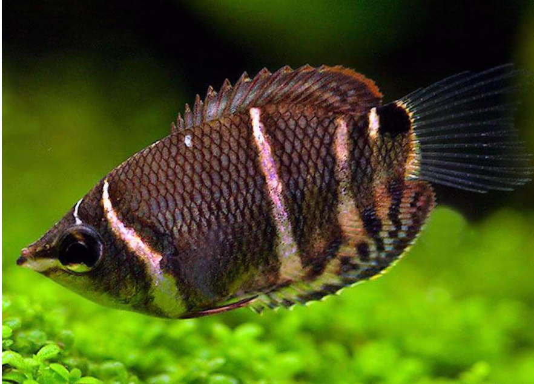
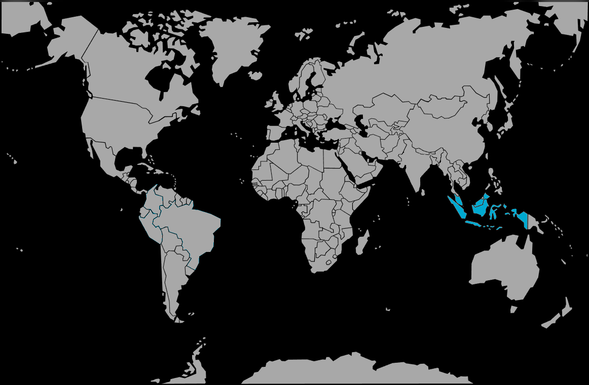

Systématique
- Ordre : Anabantiformes
- Famille : Osphronemidae
- Genre : Sphaerichthys
- Espèce : S. osphromenoides

Sphaerichthys osphromenoides, communément appelé Gourami chocolat, est un petit poisson labyrinthe très prisé des spécialistes pour sa beauté délicate, mais réputé difficile à maintenir.
Il mesure environ 4 à 5 cm. Son corps est haut et comprimé latéralement, présentant une couleur de fond brun chocolat riche, traversée par plusieurs lignes verticales irrégulières de couleur crème ou doré.
C'est une espèce extrêmement sensible à la qualité de l'eau, sujette aux maladies bactériennes et parasitaires si les paramètres ne sont pas strictement respectés (eau acide et très douce de type "blackwater").
C'est un poisson timide, calme et lent, qui stresse très facilement. Il doit vivre en petit groupe (6 individus minimum) dans un aquarium spécifique ou avec des espèces très calmes et petites (petits Rasboras).
Il a besoin d'un environnement sombre, avec une lumière tamisée par des plantes flottantes, de nombreuses cachettes (racines, feuilles mortes) et une eau très peu agitée. Toute concurrence alimentaire ou agressivité de la part d'autres poissons peut lui être fatale.
Mode : incubateur buccal maternel.
Contrairement à de nombreux gouramis qui font des nids de bulles, chez le Gourami chocolat, c'est généralement la femelle qui prend les œufs en bouche après la fécondation.
L'incubation dure environ 2 semaines, pendant lesquelles la femelle reste cachée et ne s'alimente pas. La reproduction est difficile à obtenir car elle nécessite des paramètres d'eau parfaits (pH 4.5 - 5.5) et une eau extrêmement douce.
Dimorphisme sexuel : Subtil. Le mâle a souvent une nageoire dorsale plus pointue et une mâchoire inférieure au profil plus rectiligne, tandis que celle de la femelle est plus arrondie (pour l'incubation). Le mâle présente souvent une bordure jaune plus marquée sur les nageoires.
Espérance de vie : 3 à 5 ans, mais souvent beaucoup moins en captivité si les conditions ne sont pas optimales.
Il est originaire de la péninsule malaise, de Sumatra et de Bornéo. Il vit exclusivement dans les marais tourbeux et les ruisseaux d'eau noire (blackwater) en forêt.
Ces eaux sont très acides (pH parfois inférieur à 4.0), très douces (GH quasi nul) et teintées couleur thé par les tanins libérés par la matière organique en décomposition.
Répartition

Origine naturelle :
- Asie du Sud-Est.
- Malaisie.
- Indonésie (Sumatra, Bornéo).
Paramètres de maintenance
Température : 25 à 29 °C (aime la chaleur).
pH : 4,0 à 6,0 (eau acide impérative).
GH : 1 à 5 °dGH (eau très douce impérative, idéalement eau osmosée reminéralisée).
Volume conseillé : Minimum 60 à 80 L pour un petit groupe spécifique. Filtration sur tourbe recommandée.
Régime alimentaire
Régime : carnivore / insectivore.
C'est un poisson délicat sur la nourriture. Il refuse souvent les paillettes et granulés.
Il est indispensable de lui fournir de la nourriture vivante (nauplies d'artémias, daphnies, grindals) ou du congelé de bonne qualité. Une alimentation variée et riche est essentielle pour sa survie et sa résistance aux maladies.